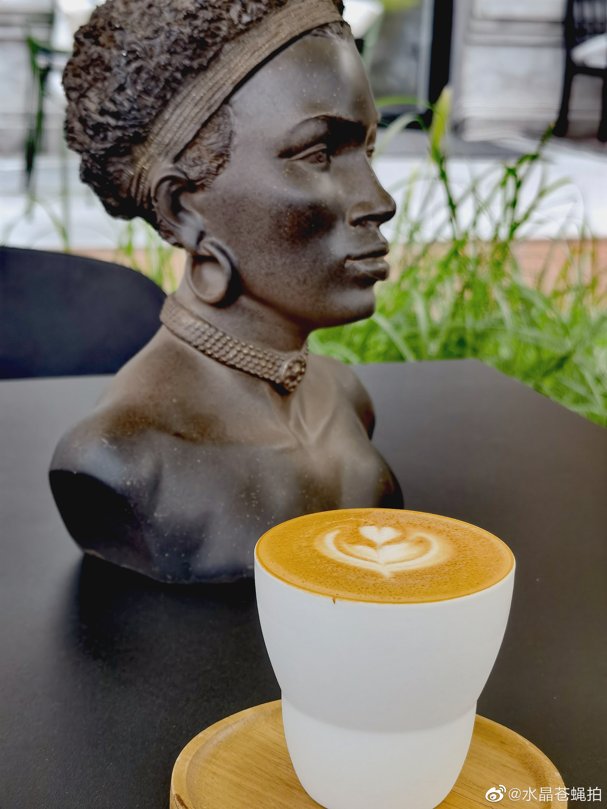

电子游戏并不是只给青少年玩，成年人需要玩游戏。分级或者区隔管理游戏行业，比一刀切要好。
@水晶苍蝇拍:
真没想到，在我小时候就刮过的“电子毒品”风，到现在还在刮。我觉得电子游戏这东西吧，从保护青少年角度确实需要限时限量等措施，但称之为毒品就太过分了吧？那电子游戏职业大赛不成了吸毒世界锦标赛？我国的电子竞技选手是不是得进去几个以儆效尤？
文章里举的一些极端案例也特别有怀旧感，和我小时候看过的游戏批判文很相似。其实讲实话，很多案例是把家庭和学校该负责的锅甩到游戏上而已，没有游戏也会去耍短视频，或者别的啥幺蛾子。
别的不说，我小时候就打游戏，我爸陪我一起无数的魂斗罗通关，还有坦克大作战，那些日子成为了美好的回忆。后来我丫头也很小就玩电子游戏，我也陪着一块儿玩（植物大战僵尸，怪物飞车啥的），只不过后来投资还是比较忙，没有继续陪着玩了，但到现在我都让丫头玩游戏，但还是那句话：大大方方玩，适度适量——但对于刷短视频，我反而很警惕。
而且从现实的角度来讲，打掉电子游戏产业，代价是几十万甚至更多相关中高薪职业的消失，和这个领域竞争力的永久性丧失。这是把一个客观存在且影响力巨大的阵地完全拱手让给外资巨头啊，再怎么说自己人掌握绝对优势，配合度总是可控的。比如游戏中的意识形态边界，血腥暴力程度的管控等，都是一个红头文件就可以解决的，如果是外资游戏公司呢？
伟人曾说过，贫穷不是社会主义。我个人觉得，丰富多彩的生活和适度的（所以再说一遍，支持对青少年必要的管控）游戏，并不与核心价值观冲突。
文章里举的一些极端案例也特别有怀旧感，和我小时候看过的游戏批判文很相似。其实讲实话，很多案例是把家庭和学校该负责的锅甩到游戏上而已，没有游戏也会去耍短视频，或者别的啥幺蛾子。
别的不说，我小时候就打游戏，我爸陪我一起无数的魂斗罗通关，还有坦克大作战，那些日子成为了美好的回忆。后来我丫头也很小就玩电子游戏，我也陪着一块儿玩（植物大战僵尸，怪物飞车啥的），只不过后来投资还是比较忙，没有继续陪着玩了，但到现在我都让丫头玩游戏，但还是那句话：大大方方玩，适度适量——但对于刷短视频，我反而很警惕。
而且从现实的角度来讲，打掉电子游戏产业，代价是几十万甚至更多相关中高薪职业的消失，和这个领域竞争力的永久性丧失。这是把一个客观存在且影响力巨大的阵地完全拱手让给外资巨头啊，再怎么说自己人掌握绝对优势，配合度总是可控的。比如游戏中的意识形态边界，血腥暴力程度的管控等，都是一个红头文件就可以解决的，如果是外资游戏公司呢？
伟人曾说过，贫穷不是社会主义。我个人觉得，丰富多彩的生活和适度的（所以再说一遍，支持对青少年必要的管控）游戏，并不与核心价值观冲突。
- 